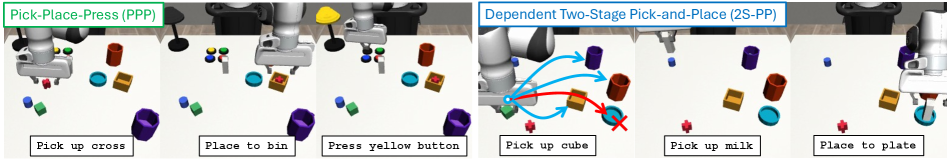
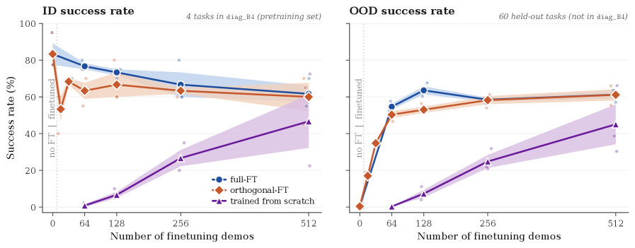

제출: 2026년 7월 31일 · 정책 백본 Transformer BC + 동결 DINOv2 + flow matching · 시뮬레이션 진단 벤치
한 줄 요약 (TL;DR)
"익숙한 지시 요소들의 새로운 조합에서 로봇 정책이 왜 실패하는가"를 세 종류의 분포 이동(marginal / instruction-compositional / context–action shift)으로 분해해 진단하는 연구. 핵심 발견: 전체 태스크 공간을 다 모을 필요 없이, 의존성을 덮는 잘 짜인 부분집합(약 1/4)만으로 강한 성능이 나오며, 희소 학습의 실패는 "저수준 스킬 부재"가 아니라 지시 라우팅(instruction steering) 실패 때문이다. 예: 대각(diagonal) 사전학습에서 태스크당 데모 1개만 추가하면 OOD 성공률이 0.4% → 54.7%로 급등.
1배경 · 문제의식
순차적 조작 정책은 학습 때 본 하위지시(subtask)들을 새로운 방식으로 재조합한 지시를 실행할 수 있어야 한다("파란 컵을 노란 통에" 같은 개별 요소는 봤지만 그 특정 조합은 처음). 그러나 조합 일반화(compositional generalization)가 왜·언제 실패하는지는 불투명했다. 저자들은 실패의 원인을 정량적으로 분해하고, "얼마나·어떤 데이터를 모아야 조합 일반화가 되는가"라는 데이터 큐레이션 질문에 답한다.
2핵심 Contribution
조합 일반화 격차의 3분해 — 실패 원인을 marginal instruction shift(테스트 하위지시가 학습에 있었나), instruction-compositional shift(익숙한 하위지시들이 낯선 방식으로 재조합됐나), context–action shift(재조합이 유발하는 잔여 행동 차이)로 나누어 진단.
실패의 정체는 "steering" — 희소 학습 정책은 재사용 가능한 저수준 스킬은 배우지만 어떤 스킬을 언제 부를지(라우팅)에서 실패. 소량의 넓은-커버리지 파인튜닝으로 회복(데모 1개/태스크로 0.4%→54.7%).
3Method (진단 프레임워크)
세 가지 분포 이동 (정의)
① Marginal instruction shift ‖q(li)−p(li)‖₁ — 테스트 시 등장하는 개별 하위지시 자체가 학습 분포에 있었는지. ② Instruction-compositional shift 𝔼‖q(l−i|li)−p(l−i|li)‖₁ — 익숙한 하위지시들이 낯선 조합으로 함께 나타나는지(조건부 분포의 이동). ③ Context–action shift 𝔼‖q(z,a|l)−p(z,a|l)‖₁ — 새 재조합이 유발하는 맥락·행동의 잔여 차이. 지시가 같아도 의존성이 행동을 결정하면 남는 항.
태스크 공간 & 벤치마크
지시 요소들의 전(全) 데카르트 곱을 태스크 공간으로 정의하고, 학습 지원집합 Etrain과 held-out OOD집합 Eood = Etotal ∖ Etrain으로 나눈다.
Pick-and-Place (PP)
16 태스크 (물체 4 × 통 4)
Pick-Place-Press (PPP)
64 태스크 (4×4×4, 독립 요인)
Dependent 2S-PP
144 태스크 (2단계, 의미적 제약: o₁·o₂를 서로 다른 통 c₁≠c₂에 배치)
정책 구조
Transformer 기반 behavior cloning. 동결 DINOv2 비전 인코더 + flow-matching 액션 생성. 정책 자체는 고정하고, 학습 데이터의 구성(어떤 태스크 조합을, 몇 개나)을 바꿔가며 일반화를 진단.
4실험 결과
구조화된 부분집합의 효율 (PPP, OOD 성공률)
학습 데이터 구성
태스크 수
OOD 성공률
Orthogonal design
16 / 64
78.2%
전체(full) 커버리지
64 / 64
유사 수준
전체를 다 덮지 않아도 요인 쌍(pair) 의존성을 덮는 직교 설계면 전체에 근접. 고정 데모 예산에서 직교집합이 무작위 확장보다 우수(그림 3).
대각 사전학습 → 소량 파인튜닝 (그림 5)
희소한 대각(diagonal) 사전학습만으로는 OOD ≈ 0.4%. 여기에 태스크당 데모 1개만 더해도 OOD 54.7%로 급등 — 저수준 스킬은 이미 있었고 부족했던 건 지시 라우팅이었음을 보임. full-FT·orthogonal-FT는 소량 데모로 빠르게 55~60%대에 도달, from-scratch는 훨씬 뒤처짐.
의존 태스크 (2S-PP)
의존 쌍 (o₁,c₂)의 커버리지가 넓을수록 같은-통 위반(same-container violation)이 줄고 OOD 일반화가 향상. 의미적으로 의존하는 태스크는 개별 요인 다양성만으로 부족하고 관련 요인들의 결합이 데이터에 나타나야 함.
5주요 발견 (Ablation · 시사점)
희소 스킬, 나쁜 steering: 최소 집합 학습 정책은 재사용 스킬을 배우나 지시 라우팅에서 실패 → 넓은-커버리지 소량 파인튜닝으로 회복.
쌍(pairwise) 커버리지가 관건: OOD 성공률은 단순 marginal 커버리지가 아니라 관측된 지시-요인 쌍의 수와 상관(그림 2c).
의존 구조는 필수: 의미 의존 태스크에선 관련 요인의 결합 조합이 표현돼야. 단계별 모듈화만으로는 부족 — 입력에서 비활성 지시를 제거(Corollary 4.2)하면 명시적 조합 이동 항은 없앨 수 있으나, 의존성이 행동을 결정하면 context–action shift는 못 막음.
6핵심 Figure / Table

Figure 1 — 진단용 순차 조작 태스크. (좌) Pick-Place-Press(PPP): 집기→놓기→버튼 누르기의 독립 3요인. (우) Dependent Two-Stage Pick-and-Place(2S-PP): 두 물체를 서로 다른 통에 넣어야 하는 의존적 2단계 태스크. (출처: arXiv:2607.29687)

Figure 5 — 대각 사전학습 후 파인튜닝. ID(좌)·OOD(우) 성공률 vs 파인튜닝 데모 수. full-FT·orthogonal-FT는 소량 데모로 급상승하는 반면 from-scratch(보라)는 크게 뒤처짐 — 부족했던 것은 스킬이 아니라 지시 라우팅임을 시각화. (출처: arXiv:2607.29687)